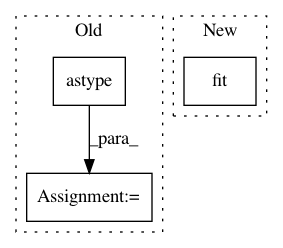

e52e9c8d7536b6315da655164951060642a52707,sklearn/manifold/tests/test_t_sne.py,,test_barnes_hut_angle,#,609
Before Change
random_state = check_random_state(0)
distances = random_state.randn(n_samples, n_features)
distances = distances.astype(np.float32)
distances = abs(distances.dot(distances.T))
np.fill_diagonal(distances, 0.0)
params = random_state.randn(n_samples, n_components)
P = _joint_probabilities(distances, perplexity, verbose=0)
After Change
n_samples, n_components)
n_neighbors = n_samples - 1
distances_csr = NearestNeighbors().fit(data).kneighbors_graph(
n_neighbors=n_neighbors, mode="distance")
P_bh = _joint_probabilities_nn(distances_csr, perplexity, verbose=0)
kl_bh, grad_bh = _kl_divergence_bh(params, P_bh, degrees_of_freedom,
In pattern: SUPERPATTERN
Frequency: 3
Non-data size: 3
Instances
Project Name: scikit-learn/scikit-learn
Commit Name: e52e9c8d7536b6315da655164951060642a52707
Time: 2019-09-18
Author: tom.dupre-la-tour@m4x.org
File Name: sklearn/manifold/tests/test_t_sne.py
Class Name:
Method Name: test_barnes_hut_angle
Project Name: NeuromorphicProcessorProject/snn_toolbox
Commit Name: cf0181bb0bf5add0686ca4dd4c03e6fb04a34703
Time: 2016-08-22
Author: bodo.rueckauer@gmail.com
File Name: snntoolbox/io_utils/datasets/cifar10.py
Class Name:
Method Name: get_cifar10
Project Name: scikit-learn/scikit-learn
Commit Name: e52e9c8d7536b6315da655164951060642a52707
Time: 2019-09-18
Author: tom.dupre-la-tour@m4x.org
File Name: sklearn/manifold/tests/test_t_sne.py
Class Name:
Method Name: test_binary_perplexity_stability